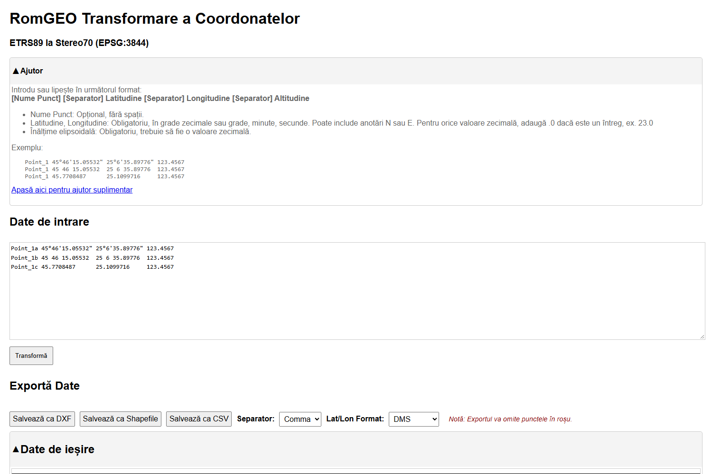
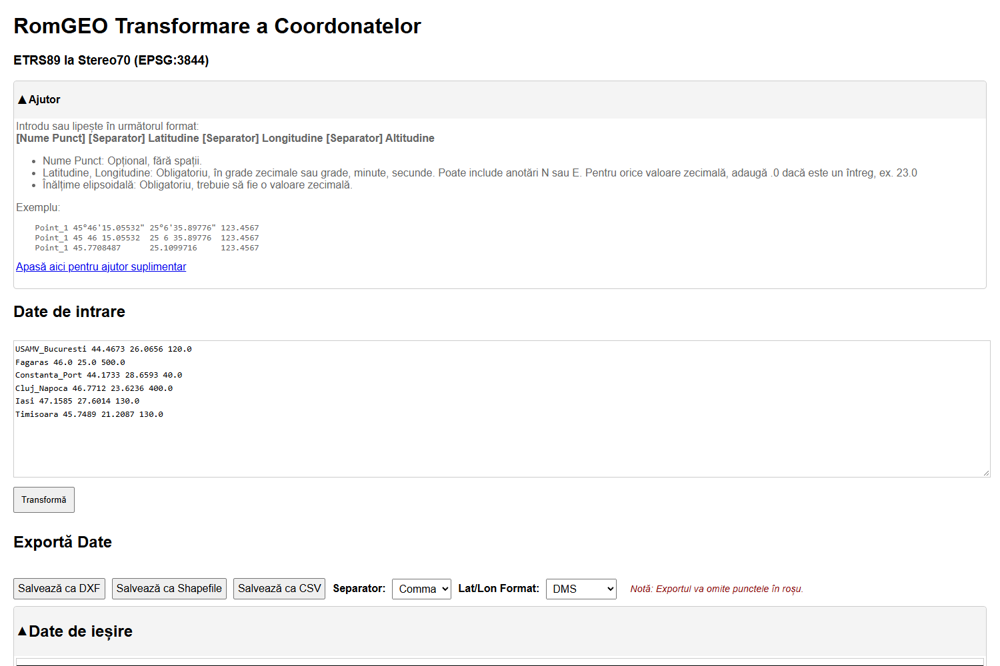
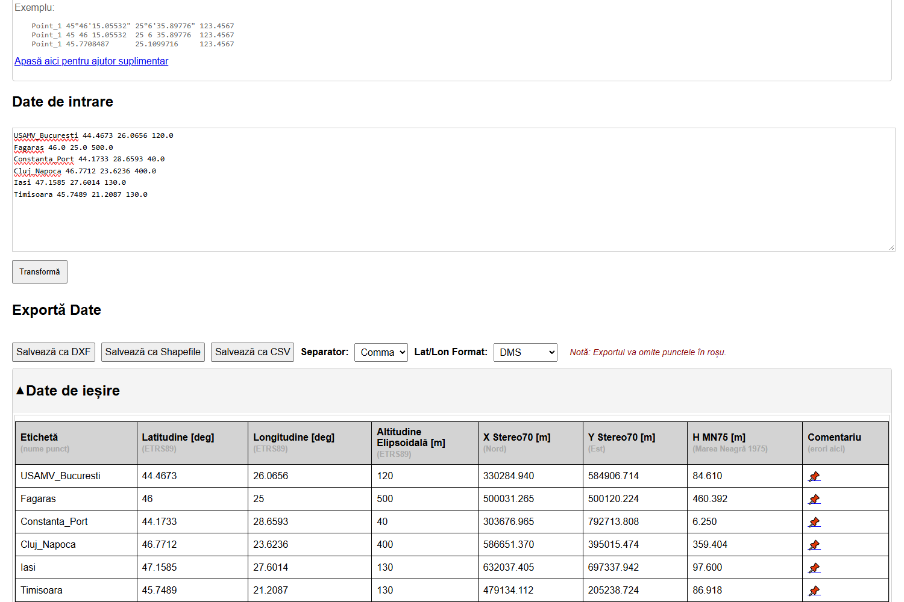
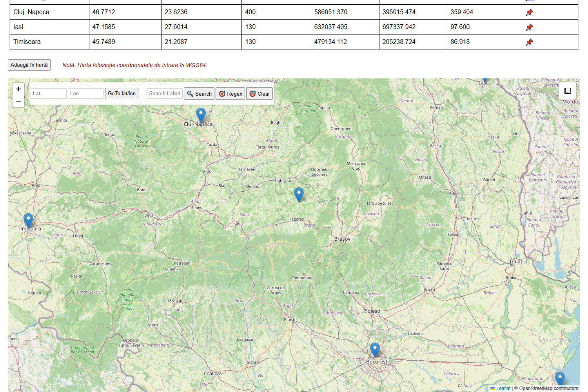

Ce face aplicația, pas cu pas
1 · Intrare GNSS — B, L, h în ETRS89 (ROMPOS, receptor RTK)
▼
2 · Schimbarea datumului — ETRS89 → Pulkovo 1942(58) pe elipsoidul Krasovski 1940, cu grila oficială (aici v. 25.09)
▼
3 · Proiecția — stereografică oblică: X (Nord), Y (Est), k₀ = 0,99975, centru 500 000 / 500 000
▼
4 · Altitudinea — modelul de cvasigeoid: HMN75 = h − ζ
De reținut: punctul 46° N, 25° E dat în ETRS89 iese la 500 031 / 500 120, nu la 500 000 / 500 000 — diferența de datum este de ~124 m.
Capturi din aplicația reală (09.10.2026):



